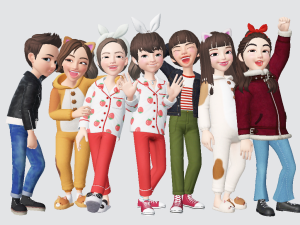
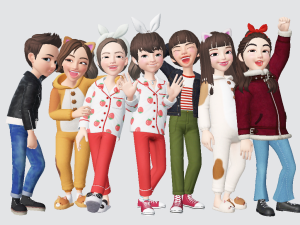

厄除けぜんざいはコレジャナイ [梅吉]
2月3日の節分は恵方巻きまるかぶりも豆まきもしませんでしたが
近所の神社で厄除けぜんざいをいただいてきました。
初詣並みの賑わいですよ。
この地域では古くからの家族イベントなのでしょうね。
おじいちゃんおばあちゃんを筆頭に孫をつれてという家族が目立ちました＾＾
テーブルとイスのあるテントは満席。立って食べている方も。
形代は家で書いて持っていきました。
（時期が来るとポストに入っているんですよ。）
形代です。家族の名前と年齢を書き込んで各々形代に息を三回吹きかけます。
その後各々形代で体を拭い厄や汚れを移して神社に納めて祓っていただきます。
去年と同じくもちろん梅吉の名前も記入。
梅吉はお鼻で三度つんつんつん。その後体を拭いました。
お参りを済ませ形代を納めお札を授与していただいて〆のぜんざい。
持参のタッパーにあずきを２〜３粒入れて持ち帰りました。
さあ！これを食べて厄除けですよ。梅吉さん。
去年も食べたから味は知っていますよね？
![[猫]](https://blog.ss-blog.jp/_images_e/101.gif) ふんふんふん・・・・・
ふんふんふん・・・・・
あらら＞＜食べません。
さあさあ、どうぞー。
・・・・なんだか「コレジャナイ」の顔に見えますけど(⌒-⌒;
コレジャナイ顔しながらも半粒ほど食べたので梅吉の厄除けも無事終了です＾＾
お札は一年間玄関で頑張っていただきます。
神社の境内では梅が咲き始めていました。
見頃は今週末くらいかな。
 ↑ガブッと一押し↑
↑ガブッと一押し↑
新たにZEPETOのお友達になってもらったのはてんてんさん。
（私のコードは70YHGNでーす。）

てんてんさんとは革ジャンペアルックでパチリ。
左はお友達のグループショット・・・・
真ん中のemiさんじゃないパジャマの方〜！（爆）
いちごパジャマパーチー、勇気ある男性の参加をお待ちしています！って
書こうと思っていたらやる気満々の方が(*>艸<)ターバンまでしてるし。
2kさん面白すぎますよw
リュカさんとmarimoさんにどんだけいじられるのかと思うと今からワクワクです0(≧▽≦)0
ChatBleuさんとはすでにパジャマと着ぐるみのお付き合い＾＾
にゃんこの着ぐるみファッションはスリッパまで完璧に一致。わ〜い！
私を着ぐるみへいざなったのはemiさんですっ！
パンダなりきりが羨ましくて・・・
2月22日（にゃんにゃんにゃんの日）に着ようと思っていた着ぐるみを
我慢できずに着ちゃいました。
おもえばわくわくは後にとっておけないタイプです。
お誕生日に渡すプレゼントも（自分が）待ちきれなくて
「ちょっと早いんだけど・・・」なんて言いながら渡しちゃいますw
みんなで太陽の塔に行ってきました。
パジャマの方はやっぱりセンターです(≧▽≦)
着ぐるみトリオ。marimoさんもニャンコになってました。
寒いから猫団子になりますか＾＾
近所の神社で厄除けぜんざいをいただいてきました。
初詣並みの賑わいですよ。
この地域では古くからの家族イベントなのでしょうね。
おじいちゃんおばあちゃんを筆頭に孫をつれてという家族が目立ちました＾＾
テーブルとイスのあるテントは満席。立って食べている方も。
形代は家で書いて持っていきました。
（時期が来るとポストに入っているんですよ。）
形代です。家族の名前と年齢を書き込んで各々形代に息を三回吹きかけます。
その後各々形代で体を拭い厄や汚れを移して神社に納めて祓っていただきます。
去年と同じくもちろん梅吉の名前も記入。
梅吉はお鼻で三度つんつんつん。その後体を拭いました。
お参りを済ませ形代を納めお札を授与していただいて〆のぜんざい。
持参のタッパーにあずきを２〜３粒入れて持ち帰りました。
さあ！これを食べて厄除けですよ。梅吉さん。
去年も食べたから味は知っていますよね？
あらら＞＜食べません。
さあさあ、どうぞー。
・・・・なんだか「コレジャナイ」の顔に見えますけど(⌒-⌒;
コレジャナイ顔しながらも半粒ほど食べたので梅吉の厄除けも無事終了です＾＾
お札は一年間玄関で頑張っていただきます。
神社の境内では梅が咲き始めていました。
見頃は今週末くらいかな。
新たにZEPETOのお友達になってもらったのはてんてんさん。
（私のコードは70YHGNでーす。）

てんてんさんとは革ジャンペアルックでパチリ。
左はお友達のグループショット・・・・
真ん中のemiさんじゃないパジャマの方〜！（爆）
いちごパジャマパーチー、勇気ある男性の参加をお待ちしています！って
書こうと思っていたらやる気満々の方が(*>艸<)ターバンまでしてるし。
2kさん面白すぎますよw
リュカさんとmarimoさんにどんだけいじられるのかと思うと今からワクワクです0(≧▽≦)0
ChatBleuさんとはすでにパジャマと着ぐるみのお付き合い＾＾
にゃんこの着ぐるみファッションはスリッパまで完璧に一致。わ〜い！
私を着ぐるみへいざなったのはemiさんですっ！
パンダなりきりが羨ましくて・・・
2月22日（にゃんにゃんにゃんの日）に着ようと思っていた着ぐるみを
我慢できずに着ちゃいました。
おもえばわくわくは後にとっておけないタイプです。
お誕生日に渡すプレゼントも（自分が）待ちきれなくて
「ちょっと早いんだけど・・・」なんて言いながら渡しちゃいますw
みんなで太陽の塔に行ってきました。
パジャマの方はやっぱりセンターです(≧▽≦)
着ぐるみトリオ。marimoさんもニャンコになってました。
寒いから猫団子になりますか＾＾

カフェオレ色の梅吉

梅吉 2023年8月10日 永眠


梅吉と出会った譲渡会

犬猫の理由なき殺処分ゼロ
妄想広告
UMEKICHI 光

爆発的に早い！
時々攻撃的！
Thanks to Mr.Boss365
爆発的に早い！
時々攻撃的！
Thanks to Mr.Boss365

早速 着ぐるみに着替えました
by (。・_・。)２ｋ (2019-02-07 00:25)
厄除けぜんざい、ってあるんですか♪いいですね＾＾
梅吉さんも形代にお鼻つんつん、小豆も半分で厄除け完了＾＾
ZEPETOどんどん発展しますね～皆さん、ノリがいい！
お会いしたことのない方の外見が少しわかるのがなんだか楽しいわあ＾＾
by sana (2019-02-07 00:45)
梅吉さんには今年のぜんざいはイマイチだったのでしょうか。違いはナニ??
着ぐるみいいな~。実際には着られないようなものいいですよね。もっとやって!
by zombiekong (2019-02-07 01:08)
厄除けにぜんざいなんですね。
梅吉さんにはカツオブシのトッピングとかは？
by ぽちの輔 (2019-02-07 07:16)
しっかり厄除け、今年もいい年になりますね~。
形代がいかにも厄払い的で良いです^^
梅吉さん厄除けぜんざいはお好みじゃなかったのねー。
ZEPETOで一緒に遊んでくださってありがとうございます。
そうですよねー、やっぱり猫の日に猫ですよねー。
でも猫の日じゃなくても猫なんですよー(意味不明^^)
by ChatBleu (2019-02-07 07:37)
梅吉さんもしっかりと厄除け！
ぜんざいは昨年と違う？？
豆の産地とか？（笑
by きぃ (2019-02-07 08:17)
梅吉さん、なんか味付けがお好みではないのでしょうかー(^_^;)
ゼペットの増殖がすごいわー。
by よーちゃん (2019-02-07 08:44)
厄除けのぜんざいというのがあるのですね！
これは知らなかったです。
形代というもの・・・以前、須磨区にある多井畑厄神に厄除けの祈願に行ったとき
人の形をした半紙に名前と年齢を書いて、専用の水が張られた石のお風呂？
みたいなところに浮かべてきました。身代わりに厄を背負ってくれるという感じの
お祓い方法でした。
きっちり厄除けできて今年一年家族みんな安泰ですね(^^
ZEPETOいいオトナ達を虜にしてしまうアバターですね(笑
by marimo (2019-02-07 10:23)
おはようございます。
厄除けぜんざいの経験ない？形代の習慣もありがたい感じですね。
小生田舎では、この時期に「厄除地蔵尊祭り」があり、お詣りする感じです。
「首浮き地蔵」があり、首と体が離れていて・・・
願いごとがかなう時は、首が軽く浮き上がる？みたいです。迷信？
信仰が受け継がれています。
梅吉君！！ちょっと悲しげ？困り顔？ご褒美あげましょう！！
にゃんこの着ぐるみ！！似合ってます？
ZEPETOが「コミュニケーションツール」になって良い輪が
広がっている感じです！？(=^･ｪ･^=)
by Boss365 (2019-02-07 10:59)
形代がポストに入る、住吉っさんのご近所ならではですね(#^^#)
あ～おぜんざい食べたい♪
相方が子供の頃食べすぎてお腹を壊して以来、あんこが苦手だというので、家では作りません^^;
梅吉さん、ことしのぜんざいの出来はいま一つでしたか？！
みんな揃って厄除け完了、何よりです^^
にゃんこの着ぐるみ・・欲しい・・。
by ゆきち (2019-02-07 12:21)
梅吉君、今年も厄除けバッチリですね^^
ぜんざい、美味しそうに見える・・・
お餅は食べられないから
梅吉君と同じく、あずきを２～３粒ほしいですｗｗ
2kさんは本物はめっちゃカッコイイですよ。
女子力高いアバターも、ふとした表情は似てる^^
by リュカ (2019-02-07 14:32)
厄除ぜんざい、神社で振舞ってくださるのですね。
梅吉さん、厄除できましたね。
ニャンさんとパンダさんの着ぐるみ、お腹のあたりモフモフできそう（笑）
ZEPETO版、猫団子見たいですね（笑）
by kiki (2019-02-07 17:27)
厄除けぜんざいなるものがあるのですね！
お汁粉食べたいので100均のキャンドゥでレトルトお汁粉買ってきました(^^)
by ma2ma2 (2019-02-07 17:31)
梅吉くんは、にゃんこ様ですから。1粒の半分でも食べてくれればOK！
ご家族一同、今年も厄除けばっちりですね(*^-^*)
私も鬼のお面持っているのよ～。
毎年チャレンジはするもののｗ今年のチャレンジを今度UPします。
今まで1度も登場しなかった理由がわかるかもｗ
marimoさんの白にゃんこ、色っぽい(#^^#)
私もパンダさんから黒にゃんこに変身したよ～ｗ
by emi (2019-02-07 18:11)
梅吉さんもしっかりと厄除けしてもらい幸せですね(^^)
うちの亀達にも厄除けしてあげたいな！
by kou (2019-02-07 20:16)
焼いたお餅の入ったぜんざい、美味しそう。
体も温まりますね。
梅吉さん、今年の小豆にはお気に召さなかったのかな。
ZEPETOの猫のスリッパが何気に可愛い♪ ^^;
by yes_hama (2019-02-07 21:54)
ぜんざいの中の御餅が美味しそうです。
着ぐるみ良いですね。
ホント、見ているだけで楽しくなります＾＾
by riverwalk (2019-02-07 22:42)
お～ ダブルライダースジャケット～♪
これならタンデムツーできるね＾＾
by てんてん (2019-02-07 23:11)
ご家族揃っての厄払い、いいですね。
あらま、あずきさんは梅さま「コレジャナイ」でしたか*^^*
うちのちゃーは、幼少期、節分の豆をカリカリばりに食べてしまうので
節分後は要注意でした。
先日試しに見せたら・・・バリバリ食べてしまった。。
好みは変わっていないようです^^;
by Ja-Kou66 (2019-02-07 23:35)
梅吉さんも厄除けですか～（ﾟ□ﾟ）
猫にも厄年ってあるのか？
by 英ちゃん (2019-02-08 01:23)
昨日のブログに親近感？おや？そうかなるほど^^梅さんが梅吉さんそれは親近感わきますね。
by ニコニコファイト (2019-02-08 07:07)
厄除けぜんざい、初めて知りました(@_@)
甘い物好きの私は恵方巻きや豆まきよりも
ぜんざいの方が嬉しいなぁ(^O^)
梅吉さんもしっかり厄除けですね(^-^)
これで今年も一年元気で過ごせる～(^_^)v
「これじゃない」表情しながらも
半粒は食べる梅吉さんってば大人ですね!(^^)!
by ニッキー (2019-02-08 12:03)
コレジャナイと思いながらも半粒お付き合いしてくれる梅吉くん。今年も厄除けはバッチリですね。よい1年になりますように(^o^)丿
by palpal (2019-02-08 16:40)
そういえば、昔、実家では形代が回覧板で回ってきたわ〜
関西だけ、なんでしょうかねぇ？
私も、恵方巻きも豆まきもやってないけど、厄除けぜんざいなら食べたい♡
by のらん (2019-02-09 11:08)
節分当日は、私が家を不在にしていて、鬼は外も恵方町も子供たちは興味ないみたいです。梅吉さん、去年の味を忘れているのかな？
ZEPETO、スゴいですね～。皆さんコレほどハマっているなんて。曽根風呂ガーの皆さん新たなコミュニケーションツールとして人気を集める予感。あたくしも参戦したいな～。
by きーちゃん2 (2019-02-09 20:12)
2kさん＞
２kさんってばなんでも着こなしちゃいますよね(≧▽≦)
sanaさん＞
あずきの赤が福を呼び邪気を払う、と言われているようですね＾＾
私も大阪に来るまで知らない風習でした。
神社に納める形代、「梅吉 ３歳８ヶ月」というのをみて神社の方が
子供に古風な名前をつけたなぁって思っているのではないかと(*>艸<)
ZEPETO、そうなんです！
お会いしたことのない方の風貌を推し量ったり
選ぶ服で人柄を想像したり・・・なかなか深い、ですよ(≧▽≦)
zombiekongさん＞
ぜんざいは味がイマイチだったのか甘いものを食べなくなったのか・・・
思えば去年はまだ子供で勢いで食べていたのかなって。
がっつきは相変わらずですが
最近人間の食べ物にはあまり執着しなくなってきました。
ZEPETO、着ぐるみも、ミニスカートもリアルには無理ですね〜。
でもアプリ内はスカートがミニばっかりなんですよ。パンツ見えるくらい短いのw
若い子向けのアプリなんだなぁって。でもおばちゃんたち大喜び0(≧▽≦)0
ぽちの輔さん＞
あずきが厄除けになるようですよ＾＾
ただの豆なら年の分食べるのは厳しいですが
ぜんざいになっていると年の数以上食べられますw
甘いものにかつぶしトッピング・・・
斬新な組み合わせ(≧▽≦)梅吉の評価はいかに！？
ChatBleuさん＞
大阪に移り住んで初めてこの形代がポストに入っていた時は
（安倍晴明の影響で）呪われてる！？ってびっくりしました(⌒-⌒;
ちゃんと説明を読んでホッとした次第ですw
去年のぜんざいは「口に入ればなんでも食べるで」だった梅吉も
最近は自分の食べられるもの、そうでないものがはっきりしてきたようです。
甘いもの好きではないことに（やっと）気づいた！！
そうそう！猫の日じゃなくても猫＾＾毎日猫耳つけようかしら。
２２２も近づいてきましたねーヾ(*ΦωΦ)ﾉ
きぃさん＞
自分が甘いもの好きではないことにやっと気づいたと思われます(^_^;)
最近人間の食べ物にはあまり執着しなくなってきたのですよ。
かりかりへの執着は相変わらずですけどwww
よーちゃん＞
そもそも甘いものが好きではない、ことにやっと気づいたと思われます。
去年は「くちにはいればなんでも食べるで」だったのかとー(*>艸<)
ZEPETO、子供の頃着せ替え人形で遊んだおばちゃんを虜にします！
楽しいですよ♪
marimoさん＞
厄除けぜんざい、私も関西に住み始めるまで知らない習慣でした。
関西でもどこでもやっているというわけでもなく地域差があるようですねー。
天王寺あたりでは天王寺蕪汁を振舞っているようですし＾＾
形代も近くの小さな神社は節分ですが
住吉大社は大祓の時に行っているようです。
厄除け、年始にも観音様に厄除けをお願いしてきたので
「私どんだけ穢れてるんだろう・・・」って若干思ったりして(*>艸<)
ZEPETO、繋がった後はそれぞれ自分のペースで遊べるのも良い感じです！
Boss365さん＞
厄除けぜんざい、形代、こういうのはやっぱり関西の方が
生活に根付いているのでしょうか。
首と体が離れている・・・？
願い事が叶うかも気になりますが
首が浮き上がる（ように）見える瞬間自体を是非体験してみたいです。
首チョンパ（爆）みたいで縁起が悪そうですがそれが吉兆のサインとは！！
地域の信仰って面白いですよね。
きっと深い言われがあるに違いないです。
by ちぃ (2019-02-11 15:31)
ゆきちさん＞
下町なので古くから住んでいる住人も多いし
こういう習慣が残っているのでしょうね＾＾
街中のマンション地帯でやったら「変なものポストに入れるな！」と
苦情が殺到しそうですw
ぜんざい、塩気が効いて美味しかったですよ〜。
梅吉は自分があんこは好きではない、ということに気づいたようですよw
去年までは勢いで食べていたwww
ニャンコのパーカーなるものがフェリシモにあるらしいです(｣ﾟﾛﾟ)｣
リュカさん＞
お餅も甘いものもダメだったら
ぜんざい食べる機会は無いですよね！
では〜、梅吉からおすそ分けしましょう＾＾
梅吉食いしん坊だけどそういう時は優しいのだ(≧▽≦)
2kさんはZEPETO用のブログでは
ビシッと決まったお姿をご披露中ですね！
「本当の俺」はそっちかなw
kikiさん＞
「みんなお参りに来てや〜」というぜんざいですね＾＾
１家族1000円なり。
２人で行っても６人で行っても同じw
みなさん「気持ち」をお納めしていると思いますけれど。
我が家の中で厄がついたら一番厄介なのは梅吉と思われるので
しっかり厄除けしてもらいました！
ZEPETO版猫団子・・・ちょっと考え中でーす。
ma2ma2さん＞
厄除けぜんざいは主に関西での習慣のようですね！
おおお、100均にもおしるこが？それは便利ですねー＾。＾
emiさん＞
そうそう！匂い嗅ぐだけでもいいかなって思ってたので
口に入れてくれて御の字です＾＾
今年も大事なく過ごして欲しいものです！
もちろんどこのおうちのニャンコもワンコもね＾＾
鬼のお面（お多福も一緒に）入手しました！
寝起きでボ〜ッとしているところにかぶせてみたら
されるがままでしたわ(≧▽≦)
emiさんのところはタラオ氏に穴を開けられないように
お気をつけくださいね(^_－)☆
kouさん＞
亀さんはなんでも食べるのでしたっけ？
あずきはお好みかしら〜＾＾
梅吉には今年も元気で過ごしてもらわなくては！
yes_hamaさん＞
節分の何日か前に氏子の皆さんが集まってお餅つきしてました＾＾
つきたてはさぞ美味しいのでしょうね〜。
梅吉はそもそも「自分は甘いものが好きでは無い」に気づいたようです。
去年までは勢いで食べていたと思われます(*>艸<)
ZEPETO、スリッパまでトータルコーディネート出来るんですよ(^_－)☆
riverwalkさん＞
お餅も神社の御謹製品です＾＾
着ぐるみ、リアルで着ることはまず無いですよねw
そういう「出来ない」ことがこのアプリでは出来ちゃいます！
てんてんさん＞
そうですね〜＾＾
どこかにお出かけしちゃいましょうか0(≧▽≦)0
by ちぃ (2019-02-11 16:19)
Ja-Kou66さん＞
節分のあずき、今年は「コレジャナイ」でした(⌒-⌒;
去年は食べたので味覚が大人になったのでしょうか。
節分のまめ、いわゆる大豆ですよね？（北海道は落花生）
バリバリ食べちゃいますか(*>艸<)
消化は大丈夫かしら・・・
あ、でもカリカリの原材料の一部でもありますか？大豆？？
（コーンミールはよく見ますよね）
英ちゃんさん＞
ねこの厄年・・・・子年とか(*>艸<)
毎年厄払いしているのでいつも備えは万全ですwww
ニコニコファイトさん＞
「梅」とつくと途端に親近感がわきますよ＾＾
ニッキーさん＞
私もぜんざいが一番嬉しいです＾＾
お餅を年の数だけ食べましょうか♪
梅吉が食べた半粒、「これも付き合やな」って
顔して食べてたので私に気を使ってくれてたのかしらw
もうすぐ４ちゃい。気遣いのできる大人になってくれたかなー(*>艸<)
何はともあれ、この先一年元気に過ごして欲しいです！
by ちぃ (2019-02-11 21:31)